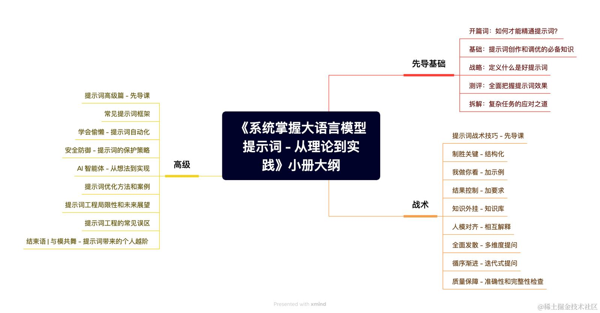

作者介绍
明明如月，头部大厂高级软件工程师，头部大厂讲师，博客专家。以下是我目前的一些主要个人标签：
- 6 年多头部大厂软件开发经验；
- 1 年多 AI 业务应用经验，拥有丰富的业务提示词调优经验和模型微调经验。信仰 AGI，已经将 AI 通过自定义 Chatbot /搭建 Agent 融合到我的工作流中。
- 头部大厂技术大学讲师，进行过多场内部 AI 相关直播分享，场均听众 2000+；
- 多个主流技术平台专家博主，全网粉丝量 6 万+，阅读量 500 万+；
小册介绍
最近听到朋友感慨 “很多人连提示词的边都没摸着，就说大语言模型不行”。
大家常说：“取代你的不是 AI，而是比你更擅用 AI 的人”。现阶段正处于AI应用崛起的前夜，提示词工程作为大语言模型的沟通桥梁，是一门重要的技能，也是一门“提问的艺术”。掌握编写高质量的提示词的诀窍，了解调优思路和方法，能更好地发挥大语言模型的作用，为你的生活、学习、工作（甚至是换工作）带来巨大的助力。以大厂为例，在应用 AI 化的背景下，学会大模型业务选型、提示词工程编写与调优，那么你比其他人更快、更容易拿到更好的业务结果。
那么你觉得你有没有跟上这个时代？
在这个 AI 快速发展的时代，你是否也希望更好地驾驭大语言模型提高工作、学习的效率、助力业务的发展？你是否在搭建智能体或业务应用 AI 化的过程中，因为大模型“听不懂”你的提示词，而感到困扰？
本小册可以帮助你从零开始，快速系统地掌握提示词工程，编写出高质量的提示词，逼近大语言模型的能力上限，发挥出大语言模型的更大潜力，帮助解决生活中各种问题，为学习助力，为业务提效。
本小册整体可分为 三大模块 ，精心设计了 从战略到战术、从理论到实践，由浅入深、循序渐进地学习路径 ，确保你能够在较短的时间内快速掌握提示词工程的精髓，快速应用到解决工作、学习和生活的各种问题上来。
-
在
先导基础篇，你将掌握提示词创作和调优的必备知识，提示词创作的战略思想、评测方法和复杂任务的应对方法。通过这一部分学习，你将对提示词工程建立全局的认知，为后续的深入学习打下基础。 -
战术篇将带你探索各种编写提示词的重要战术技巧，如通过结构化让提示词更容易维护和理解，通过增加示例，让大语言模型更好领悟我们的意图，通过加要求更精确地控制输出，通过知识库给大语言模型提供额外信息更好地解决问题等。通过这一部分的学习，你将全面提升自己的提示词编写能力，能够实现相对复杂的提示词编写。 -
高级篇则为你介绍常见的提示词框架，自动化提示词的编写技术，提示词常见的安全问题和防御方法，从想法到实现演示智能体应用，系统介绍提示词的调优方法和案例，对提示词的局限性进行讲解对提示词的未来进行展望，最后对提示词工程的常见误区进行探讨。你将积累丰富的提示词创作和调优经验，真正掌握提示词工程的精髓。
小册 思维导图 如下：

良好的沟通表达能力是职场人的基本素养，提示词则是与大语言模型沟通交流的艺术。调优提示词的过程，也是验证和提升我们表达能力的过程。希望大家可以把提示词工程的学习当做提高表达和沟通能力的一个机会。
你会学到什么？
- 从零开始，快速系统化掌握提示词工程；
- 系统化掌握提示词编写思路，从战略到战术全流程覆盖；
- 从想法到实现，学会创建 AI 智能体高效解决问题；
- 掌握提示词的调优思路和方法，提高提示词效果，逼近模型能力极限。
适宜人群
- 希望让 AI 更“听话”，更快找到答案和解决问题的人。
- 希望快速编写高质量提示词上手 AI 应用的产品、运营、开发等从业者；
- 渴望将行业知识和经验通过提示词工程传授给大模型助力业务提效的开发者；
- 希望系统掌握提示词工程，更好地使用 AI，解决学习和生活问题的各行各业的从业者。
购买须知
- 本小册为图文形式内容服务，共计
23节； - 全部文章已更新完毕；
- 购买用户可享有小册永久的阅读权限；
- 购买用户可进入小册微信群，与作者互动；
- 掘金小册为虚拟内容服务，一经购买成功概不退款；
- 掘金小册版权归北京北比信息技术有限公司所有，任何机构、媒体、网站或个人未经本网协议授权不得转载、链接、转贴或以其他方式复制发布/发表，违者将依法追究责任；
- 在掘金小册阅读过程中，如有任何问题，请邮件联系 xiaoce@xitu.io
COMMUNITY NOTES
读者评论
这篇文章暂时没有读者留言。